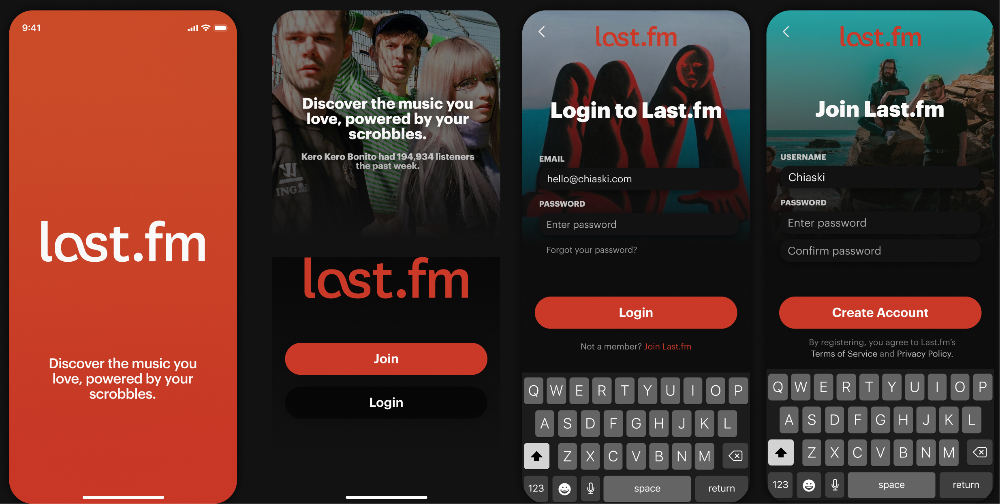

Last.fm is a classic music tracking & discovery platform. In a time of streaming, its ability to aggregate and socialize users over data grows more important to how we network over music.

Context
The music platform for diehards
The beauty of Last.fm is that it puts discovery, community, and data together. Last.fm was founded in 2002—I created my profile in 2011, when I was 10, but didn't really use it aside from recording a single scrobble of Lady Gaga's Love Game.
I started listening to music seriously the summer before college. Ordering vinyl, albums front-to-back, delving into music criticism. I joined my college radio station, filled up my music catalogue with carefully-collected YouTube-only finds and Bandcamp exclusives. In 2019, Spotify Wrapped told me I listened for 140,000 minutes.
After looking at hundreds of music charts, I rediscovered Last.fm: a site that syncs with music platforms and collects your listening activity in one space. It delivers listening reports, recommendations, and lets you chat over artists, albums, and music and follow other people's activity. As a music fan, I fell in love with the product: it understands me like no other. My activity, meeting new friends over music, and giving me the best recommendations of any platform.
In the age of streaming, Last.fm unifies music—making the product more relevant than ever
Here's the thing: Last.fm brands itself as your "musical calling card." However, the mobile application doesn't reflect this yet. I set out to design a mobile experience for Last.fm: the go-to place for music from everywhere should be accessible anywhere.
Last.fm on mobile today
At present, the Last.fm mobile app shows you your aggregated music ("scrobble") history and some stats. Let's see what's missing.
 Present Last.fm mobile app
Present Last.fm mobile app
Rationale
Streaming is so disjointed nowadays. I'm switching between Spotify, YouTube, my local files, Bandcamp, and more. Worse: It's hard for people to really get data to track things even if it's supposedly feeding into everything. But people love data. Spotify Wrapped is lauded as a genius marketing campaign. People still flex their music on their Instagram story (don't worry, I listen). People check random sites off IPs just to see their top artists.
This is where Last.fm fits in well. I'll be a forever advocate of how it's an underrated product that could boost itself up with a much-needed update.
Understanding Last.fm users
Collected from online comments and personal interviews, reaching out to people through a call, face-to-face, or in text.
Last.fm is populated by diehard music fans. These are people who want too understand their music activity closely, people who love statistics—these are people who enjoy seeing their music date back years, and socializing with people who do the same.
With these comments, I thought exploring a design that focused on bettering stat and history features—a key part of Last.fm's enjoyability today.
What's the Last.fm mobile app missing?
Missing features
No existing experiences for search, discovery, reports, or socials. It's a plain list based on activity.
No onboarding
...alienating the dominant mobile-first demographic. "Sign Up" brings you to Last.fm on Safari.
Minimal info & discovery
The beauty of stats and related artists are missing, when the data is all there!
I talked to existing Last.fm users and explored Last.fm alternatives to explore issues with the current mobile experience. What I found aligned with my personal experiences: the Last.fm app is underwhelming, it displays the raw data, but doesn't synthesize it.
How might we give on-the-go listeners the ability to understand and discover their music?
What does Last.fm serve when it tracks music you're playing on your phone, without letting you dive into that history? Tracking and listening history would become a priority.
New Architecture & Map
For this iteration of the redesign, I prioritized building an onboarding flow, showcasing listening history and statistics, reworking the way music information is presented, and introducing the social aspects of the site on mobile through profiles.
Intuitive spacial interfaces like Snapchat's are a huge inspiration in the mapping of this. Discovery should very much feel under the user's fingertips: which I want to intentionally imitate with the interaction design of the app. The user should be able to jump from artist to artist if a relation is present, and navigate their data in a sensible way.
Prioritizations
Universality 🌎
Remove complexity on web and make navigation as easy as flipping through a record collection
Immediacy 🗂
Focus on the music calling card aspect of the app, or discover at a glance
Data-driven 📊
Synthesize info on the app for users to understand: let this highlight Last.fm's discovery features
Constraints—instead of importing all web functions to mobile, I chose to impose some constraints on the features to bring in. (Events, forums, unnecessary statistics, etc.)
Key Assumption—Last.fm's edge is in its data. It is empowering to listeners when they can understand their behavior—no other music service understands this as well.
 A selection of the design assets for the redesign that I began reusing while putting together mid-fi screens
A selection of the design assets for the redesign that I began reusing while putting together mid-fi screens
Asset Library
In these designs, you'll notice a heavy use of images. One impactful feature on Last.fm is community-voted images that overlay music pages. It's memorable and beautiful: I wanted to keep this level of customization and intimacy in.
Visual Audits & Some Competitive Analysis
This is my first exploration into mobile design. I picked up patterns and interactions from other music and social apps, looking carefully into social features and how top streaming services architect their music screens. Laying things out, drawing patterns, and amping up my mobile usage is helping me build my eye for mobile.
OVERVIEW
A redesigned musicscape
Last.fm is an incredible product that has the potential to expand its existing demographic and userbase (largely diehard music fans, extensive listeners) into the masses. By pushing on screens and nudging the user towards discovery, there's a ton of potential to revive it with a redesign. Here, I focus on an exploration that touches on these main screen forms.
KPIs for this Redesign—Usage of discovery and informational screens: Search, viewing details on music, and the recommendation features.
I would cut track/album/artist pages if they weren't being used, and focus more on dataa.
Feature Types
For the redesign, I thought about features by categorizing them into three main categories clustered into Information, Insights (data-oriented), and Social. Some screens fulfill several of these purposes at once: the home page which shows a user's latest scrobbles, discovery suggestions, listening report snippets, and obsession is a main screen that weaves all of the three.
The application in its current state only has Information screens, aside from Top Music that gives the user information on their most listened music over a time period.
Process
Prototype
In-depth
Music Screens


Artists
Albums
Tracks
Top Music
Your listening activity at a glance.
Users should be able to seamlessly swipe between their top artists, albums, and tracks. This simple gesture mimics the current application's layout, but brings the user to navigate without needing to click.
Home
Home—On the new home, recent tracks are condensed to top listens; users are given more channels to explore their profile, recommendations, and listening reports. I built out other microinteractions on the tracks that give users the power of editing and control along with these new customizations.
Gathering your listening history, recommendations, and reports in one place
 Swipe to love interaction
Swipe to love interaction
Discovery
Let's build out a dedicated hub to see all of Last.fm's recommendations. Like thumbing through Spotify Radio or your Youtube Suggestions, but amplified with recommendations powered by socials (what do other users who also listen to King Krule like?)—discovery is a valuable surface area for mobile users who quickly want to find someone like who they're currently listening to.
- What you've scrobbled previously (and how many times)
- Releases from artists you frequent, but haven't listened to yet
- "Similar to" recommendations of any music type
- (Missing, but on web) Events
"Next to talking with actual people, Last.fm gives me the best recommendations. I think that's my favorite thing about it."
Search
I put together search for the new menu.
Other behaviors that I wanted to introduce included the following:
- Loving tracks to save them: As highlighted above, users should be able to save and indicate their favorite tracks on-the-go, done through the love feature
- "Don't recommend": Sometimes we just don't want to hear something. This is also a feature on Spotify that I wanted to highlight here—users get to input their own form of 'moderation' and wants to the algorithm.
Home Iterations
 Home screen iterations
Home screen iterations Alternative home screen with scrobble and discover separated
Alternative home screen with scrobble and discover separated
Registration and Onboarding
The lack of an onboarding experience on the present app presents a huge opportunity area to hit what is now a majority mobile-first demographic.
Visually, music is highlighted to hook users into syncing and signing up. As they connect services, background overlays shifts—showing how it truly revolves around your taste.
This new syncing and information sequence targets user confusion with where music was being pulled from, and gives a brief overview about Last.fm's core features and music terminology.
Iterations
 First concept, trying out changing background on albums and copy lifted from current web experience
First concept, trying out changing background on albums and copy lifted from current web experience Expanded registration and onboarding sequence
Expanded registration and onboarding sequence Expanded with loaders, fixing registration flows
Expanded with loaders, fixing registration flows
 Expanded screens and guides
Expanded screens and guides
User Profiles
"On the site, I'm always looking at my Last.fm profile. I wish I could see that view on the app."
There was previously no profile page on mobile. Now, it's a social space to instantly see a user's top music, a glance at their listening activity, and more.
On profiles at just a glance we get a snippet of a user's activity and history, week to week.
As a musical calling card, all music stats are compiled on the screen.
Other potential features for this space are neighbors (users with similar music tastes to you) and more details covering play counts & listener statistics.
Profile Views
Set Obsession
User profiles on web are quirkily customized with the user's obsession, a set track (or their top one if not chosen). I wanted to keep this in mobile.
Compatibility
 Your compatibility with Chia is Super
Your compatibility with Chia is Super
Social Compatibility—How do profiles come into play on the app? By taking a music-centric approach, user profiles can showcase music compatibility, and lead users to trails of new artists from other's own habits. It's social without being explicit about traditional, cluttered messaging and chat features that are better suited to the full website. At the bottom of music pages, "Top Listeners" highlighted by recent activity can be displayed to further facilitate this.
Listening Report
This is Last.fm's edge: it gives users a data-driven glimpse into their musical history.
The reports are filtered by week, month, or year: with immediate scrobble counts, day views, overlaid on their top discovery of the week.
- Scrobble counts displayed as bars encourage users to listen even more than previous weeks.
- Top music highlights the user's top artist, album, and track.
- The Last.fm tag timeline shows the diversity in music taste over time, and highlights the user-generated tags on Last.fm.
- Discoveries show users their top listens throughout the week.
Listening Report Notifications—Last.fm also has incredible potential to use push notifications and emails to deliver users overviews of their activity, driving them to check their stats and discover some new music along the way.

Notifications
Iterations

Notification Design
Let's have a crack at UX Writing and some microinteractions in-app. Good notifications are key to retention on the mobile app, and we want users coming back in to open the app and let the data collection stream in. After building this loop, people should be together.
Here's a quick take on how much delight each notification might bring the user—baseline guess, disregarding matrix. Impact will raise depending on how good users listen.
Insights
- Generic Last Week— You scrobbled [425] songs last week. Get your report!
- Scrobble More— You scrobbled [425] songs last week, up 20% more than any of your friends. Get your report!
- Top Track— You listened to [money machine by 100 gecs] [52] times last week. New obsession?
- Discoveries— You listened to [money machine by 100 gecs] [52] times last week. New obsession?
These notifications invite users to discover their listening history and top artists.
Information
- New release—[Artist] dropped [album/track], their newest ["album"/"track"]. Give it a listen.
- Top This Week—This week, over [##,###] people listened to [Artist].
- Discover Recommendation—Because you like [Artist/Album/Track], we think you'll like [Artist/Album/Track]. Here's a bit on them.
- Followed you—Someone likes your taste, [user] followed you!
Social
Branding & Marketing
Reviving Last.fm's presence
Last.fm posts pretty infrequently when they could be a go-to place sharing interesting music trends, entrenching themselves in different niches of music fanaatic IG, Twitter, or TikTok circles—it's begging for it.
Share to Instagram
Everyone wants to broadcast what they'r sharing about. Like Spotify's Wrapped, but delivered with the best data available to users—we can make Last.fm a lot more enticing to download with this generable music for stories.
This is pretty easy to implement with the Instagram API: one layer can be a solid image, the sticker can be tapped and changed and moved around the screen, and users can even have fun with Instagram's music embed.
Next Steps
As a product, Last.fm has a dwindling userbase and desperately needs to be the best at its many developed features over the years. To me and in this redesign, that was how in an age of mobile streaming over dozens of services: it connects and makes sense of everything, empowering me as a listener by letting me know the data behind my behavior.
Instead of falling into a trap of underused prompts or spaces, I'm interested in seeing how the dead simple edge as a musical calling card can lead to everything else: discovery, engagement, and more streams. I'm certain there's power in these building blocks even if the mobile redesign doesn't have the entire web featureset: there's already so much we can get from these numbers and materials. They're simply universal to every listener.
- Going social ❔
This design only featured user profiles as a beginning engagement space. If put into action, it would be interesting to observe data on how users engage with one another—especially while only currently prompted by music pages. - Capturing listening activity as success ❔
With the redesign, it would be interesting to capture how much more active listeners are. Are they only checking on Last.fm to see their latest activity? Do their behaviors change now that there's more numbers and customization that reflect their listens?
Again, all of this is still a work-in-progress. Let me know what you think, or better yet—let me know how you listen.
Surfacing all the music you love.
Visit Last.fm